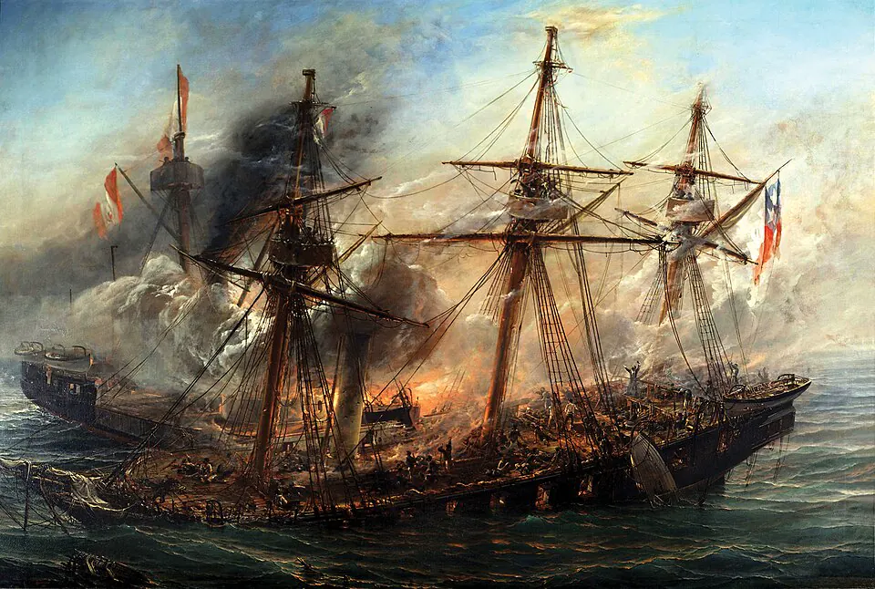

Combate Naval de Iquique

Al comenzar la Guerra del Pacífico, la escuadra chilena bloqueaba Iquique, entonces puerto peruano. El 21 de mayo de 1879 quedaron allí solo dos naves antiguas: la corbeta Esmeralda, al mando de Arturo Prat, y la goleta Covadonga, de Carlos Condell. Fueron atacadas por el monitor Huáscar, comandado por Miguel Grau, y la fragata blindada Independencia, de Juan Guillermo More.
Tras horas de combate, el Huáscar embistió a la Esmeralda. Prat saltó al abordaje con pocos hombres, entre ellos el sargento Juan de Dios Aldea, y murió en la cubierta enemiga. La Esmeralda se hundió con su bandera izada. Mientras tanto, la Covadonga fue perseguida por la Independencia, que encalló en Punta Gruesa y se perdió.
En Iquique el resultado favoreció a Perú, pero la pérdida de la Independencia debilitó su poder naval. En Chile, el sacrificio de Prat generó una ola de patriotismo y de alistamientos, y el 21 de mayo se conmemora como Día de las Glorias Navales. En Perú, Grau es el gran héroe naval, recordado por su caballerosidad; murió en el Combate de Angamos, el 8 de octubre de 1879, cuando el Huáscar fue capturado.
Ver el relato narrado en el atlas
Versión para niños
El 21 de mayo de 1879, frente a Iquique, dos barcos chilenos viejos y pequeños, la Esmeralda y la Covadonga, se enfrentaron a dos buques peruanos más modernos, el Huáscar y la Independencia. El capitán Arturo Prat, al mando de la Esmeralda, decidió no rendirse. Cuando el Huáscar chocó su barco, Prat saltó a la cubierta enemiga y murió allí. La Esmeralda se hundió. Su valentía emocionó a todo Chile y muchas personas se unieron a las fuerzas armadas.
Para maestros
Nivel sugerido: 1° medio
Objetivo: Analizar el Combate Naval de Iquique como hecho militar y como construcción de memoria heroica en Chile y en Perú.
Preguntas para la clase:
- ¿Por qué un combate en que Chile perdió un barco se convirtió en un símbolo nacional?
- ¿Cómo recuerdan en Perú a Miguel Grau y por qué es respetado también en Chile?
- ¿Qué valores se asocian a los héroes y cómo cambian según quién cuenta la historia?
Actividad (20–30 min): Los estudiantes leen la carta de Miguel Grau a Carmela Carvajal y la respuesta de ella, y las comparan con un relato escolar chileno y uno peruano sobre el combate. Identifican qué destaca cada fuente y escriben una conclusión breve sobre memoria y heroísmo.
Fuentes sugeridas: Memoria Chilena; Museo Marítimo Nacional; Biblioteca Nacional Digital.
Objetivos de Aprendizaje (Currículum Nacional)
- 1° básico · HI01 OA 05 Reconocer los símbolos representativos de Chile … conmemoraciones nacionales (como Fiestas Patrias, Día del Descubrimiento de dos mundos y Combate Naval de Iquique)
- 6° básico · HI06 OA 05 Describir cómo se conformó el territorio de Chile durante el siglo XIX … la Guerra del Pacífico y diversos conflictos bélicos
- 1° medio · HI1M OA 15 Analizar la guerra del Pacífico considerando el conflicto económico en torno al salitre, el impacto de la guerra en múltiples ámbitos de la sociedad chilena
Personajes
Revisión humana pendiente. Cómo se revisa · Reportar un error
Cómo citar: Historia de Chile. (2026). Combate Naval de Iquique. En Historia de Chile: atlas y línea de tiempo. https://moises-salgado.github.io/historia-de-chile/momento/combate-naval-de-iquique.html